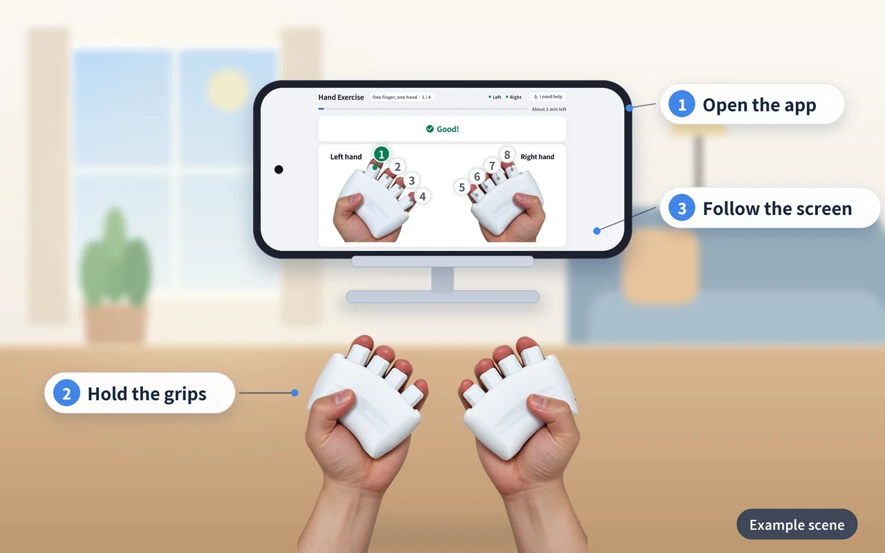
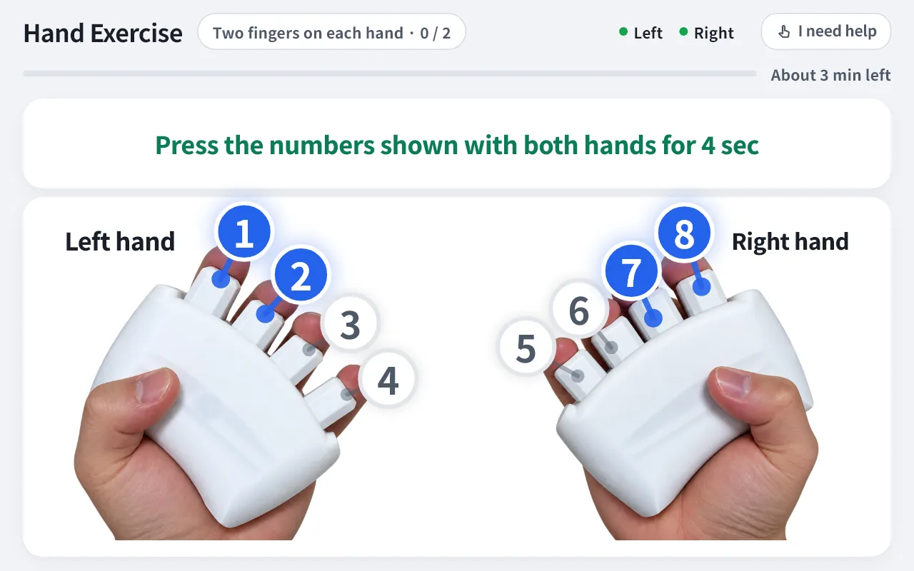
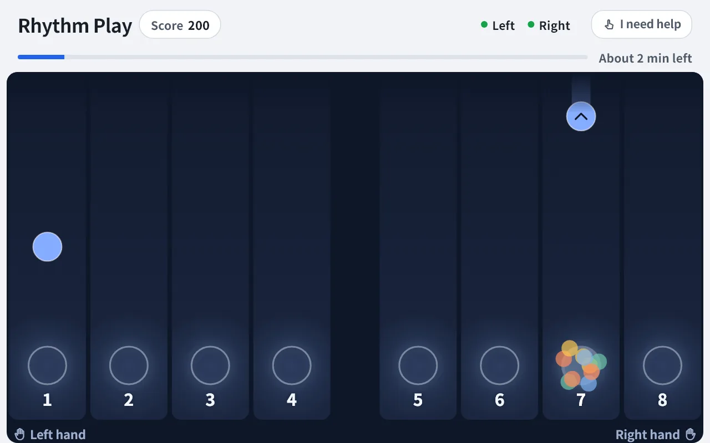
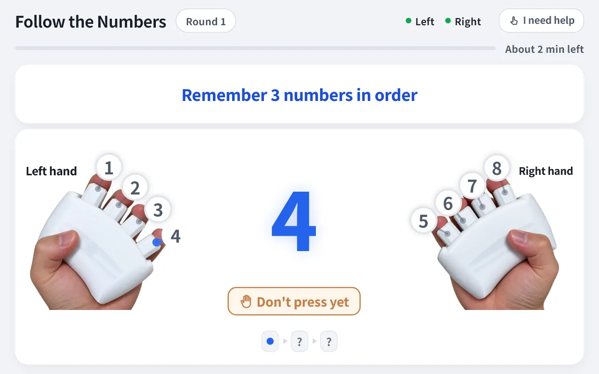
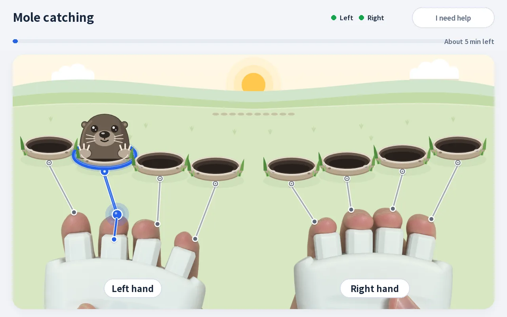
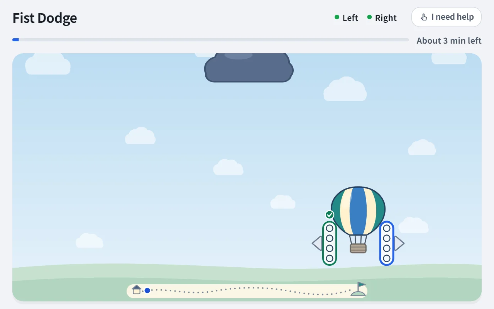
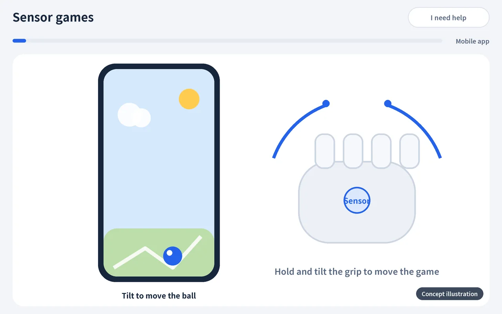
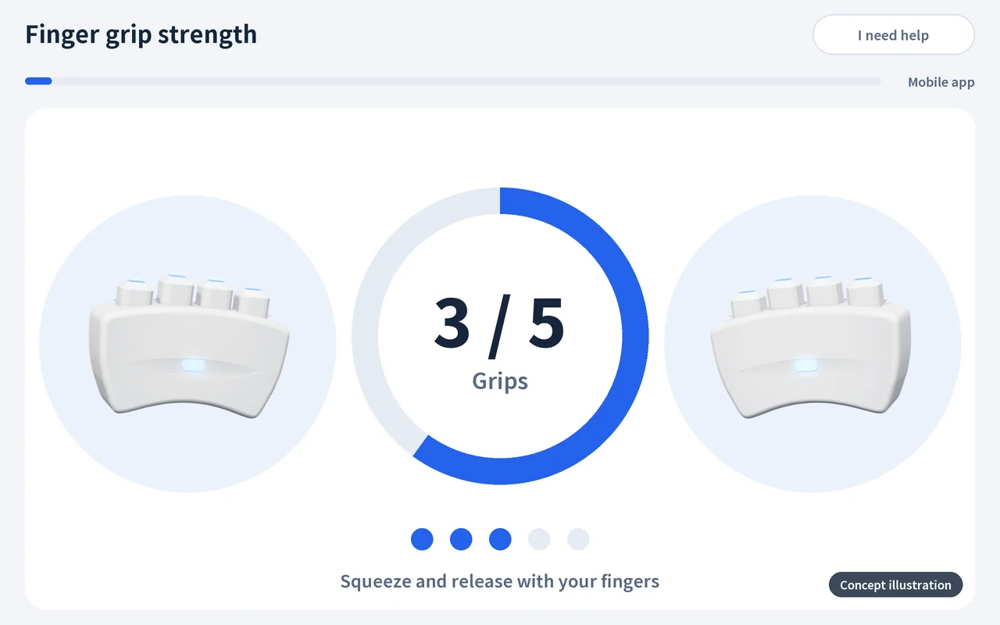

Rehaptic to enjoy at home,
in preparation
We are preparing a mobile app and grips so that older adults and their families can enjoy activities that move the hands and the head together at home.
Planned launch: 2028 or later
How it looks at home
Open the app, hold the grips, and move your hands and head together as the screen guides you.

Scenes are illustrations drawn to help you picture it, and the device screens are actual screens of the center tablet app (English UI shown). The home mobile app may have a different layout (UI), and product specifications and schedule may change.
Open the app
On a smartphone or tablet.
Hold the grips
One grip in each hand.
Follow the screen
Press as the screen, sound and vibration guide you.
Activities to enjoy at home
We are preparing the same contents as the center version for home use. Sensor games and finger grip-strength exercise are in preparation for the new grip.
-

Hand exercise
Press the finger of the lit number and keep holding for a set time. Sustain · Separation · Coordination
-

Rhythm play
Press falling circles in time with the background music. Beat · Coordination · Sustain
-

Follow the Numbers
Watch numbers, remember them and press them in the same order. Sequence · Separation
-

Mole catching
A reaction game in which you press the lit finger to catch the mole that pops up. Reaction · Separation
-

Fist Dodge
Squeeze the whole left hand to steer the hot-air balloon left and the whole right hand to steer it right, dodging the dark clouds. Coordination · Sustain
-

Sensor games
Control games by holding and moving a new grip that contains a gyro sensor. Control · Coordination
-

Finger grip-strength exercise
Enjoy games while also exercising the grip of your fingers. Sustain · Control
-
More contents are in preparation
One finger at a time, depth matching, follow the beat, seasonal and regional theme packs and more are in preparation.
See the full contents lineup
Pictures marked "concept illustration" were drawn to explain contents in development and are not actual app screens. We make no claims of efficacy or therapeutic effect. See all contents in the full contents lineup, and what each domain means on the technology page.
How it differs from the center version
| Item | For centers | For home |
|---|---|---|
| Who uses it | Program staff and older adults | Older adults and family |
| Package | Haptic grips + tablet app + admin web | Haptic grips + mobile app |
| Contents and measurement | All the same | All the same |
| How it's used | Staff run the program, and records are managed in the admin web | Enjoy it on your own with the mobile app at home |
| Status | Planned launch: first half of 2027 | Planned launch: 2028 or later |
Whether you use a tablet or a smartphone, only the screen layout (UI) differs; the contents and measurement are the same as the center version.
What we are preparing
Mobile app
An app for enjoying activities that move the hands and the head together at home.
A new grip with a sensor
A grip with a gyro sensor, so you can control games by holding and moving it.
Games and finger grip-strength exercise
Activities that combine enjoying games with exercising the grip of your fingers.
All of this is planned, and the schedule and package may change. We make no claims of efficacy or therapeutic effect.
Want to hear about the launch?
Email us and we will send you news about Rehaptic for home. Your email address is used only for sending news and is handled under our privacy policy.